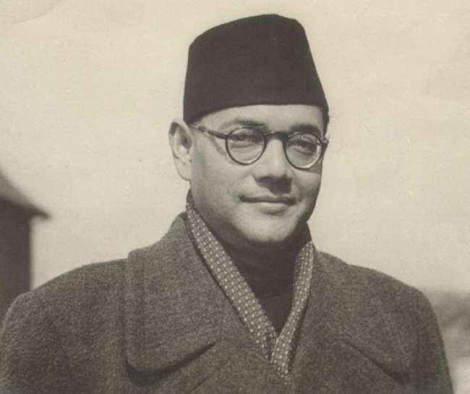
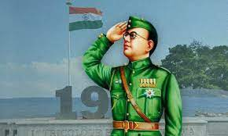

Education and Early Life

Born on January 23, 1897, in Cuttack, Odisha, Netaji was imbued with a sense of patriotism from a young age. His pursuit of education took him to the prestigious Presidency College in Kolkata and eventually to Cambridge University. However, it was his profound conviction in India's right to self-determination that led him to forego a coveted civil service career and dedicate himself to the cause of freedom.
The trajectory of Netaji's life was marked by a series of bold decisions that showcased his fearless character. His leadership roles within the Indian National Congress and his subsequent differences with its leadership reflected his determination to chart an independent course in the fight against British colonial rule. His eloquent speeches and stirring writings galvanized the masses, fostering a spirit of unity and resistance.
One of the defining chapters in Netaji's life was his role in the formation of the Indian National Army (INA). He believed that the road to freedom required decisive action, and he rallied soldiers under the banner of the INA to march towards Delhi, with the iconic slogan "Dilli Chalo!" The INA's battle cry resonated with soldiers who hailed from diverse backgrounds, united by their shared dream of a liberated India.
While the physical presence of Netaji may have faded from the world, his legacy continues to burn bright in the hearts of millions. His call for "Give me blood, and I shall give you freedom" ignited a flame of dedication among Indians, inspiring countless individuals to make sacrifices for the nation's greater good.
Netaji's early life was marked by his pursuit of education, which instilled in him a passion for learning and a deep sense of national pride. After completing his schooling in Cuttack and Calcutta, he enrolled at the prestigious Presidency College, where his intellect and leadership skills began to shine. His journey eventually led him to Cambridge University, where he imbibed a broader perspective on the world and its political dynamics.
Leadership and ideas

Netaji's leadership style was marked by his resolute approach and bold decisions. He was elected as the president of the Indian National Congress in 1938 and 1939, during which he emphasized the importance of unity and self-reliance for India's independence. However, his differences with the Congress leadership on strategies led him to chart his own path in the struggle for freedom.
Conclusion

The life of Netaji Subhas Chandra Bose encapsulates a story of courage, sacrifice, and the unrelenting pursuit of freedom. His legacy transcends time, reminding us that one individual's unwavering determination can shape the destiny of a nation. As we honor his memory, let us draw inspiration from his life to continue working towards a brighter, more just, and inclusive India.
Netaji's life serves as a testament to the power of one person's vision to ignite a movement that changes the course of history. His indomitable spirit challenges us to rise above challenges and stand up for justice, freedom, and the ideals that he held dear.